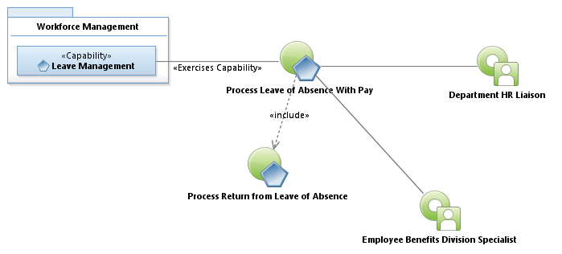
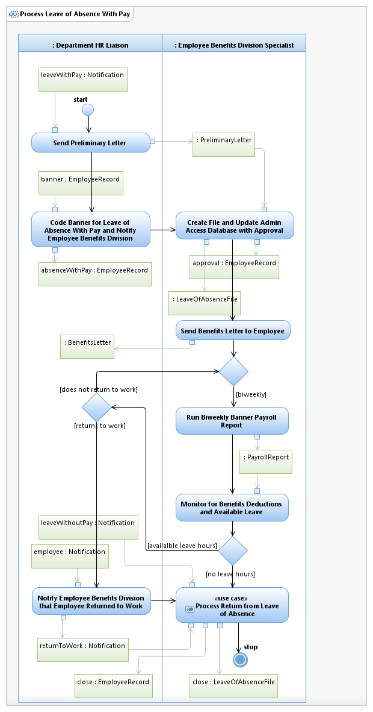

Use Case Model: Process Leave of Absence With Pay
Architect: Rob Byrd, Chief Enterprise IT Architect
Date Last Modified: 03/08/2013
User Review: Shannon Flett, Shelly Sheppard, Linda Escamilla, Sharon Huckabee
Date: 03/08/2013
The Department Administrator notifies the Benefits Specialist via letter that an employee is on leave of absence using sick, vacation or compensation time for an extended period of time. The Benefits Specialist biweekly monitors benefits deductions and available leave time until the employee returns to work. If the employee runs short of leave time, the Benefits Specialist performs Process Leave of Absence Without Pay.
Follow link to Role Definitions

Use Case Model: Process Leave of Absence With Pay
Follow link to Process Return from Leave of Absence

Activity Model: Process Leave of Absence With Pay